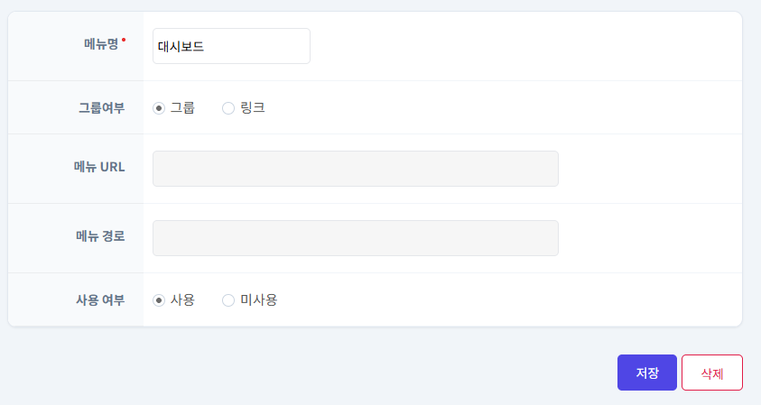
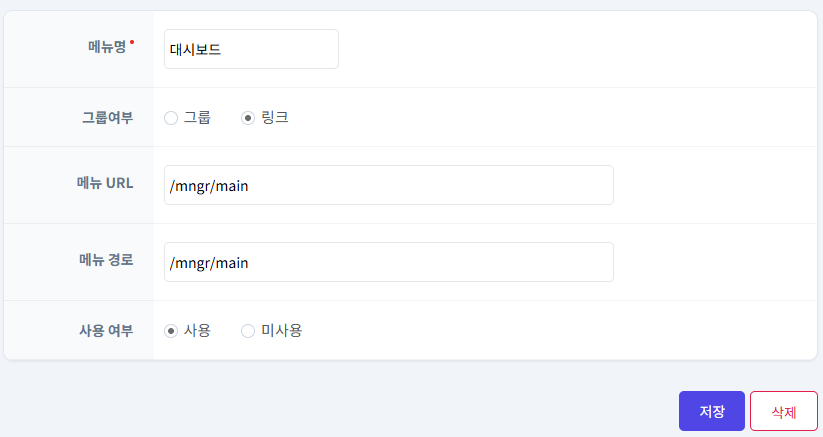
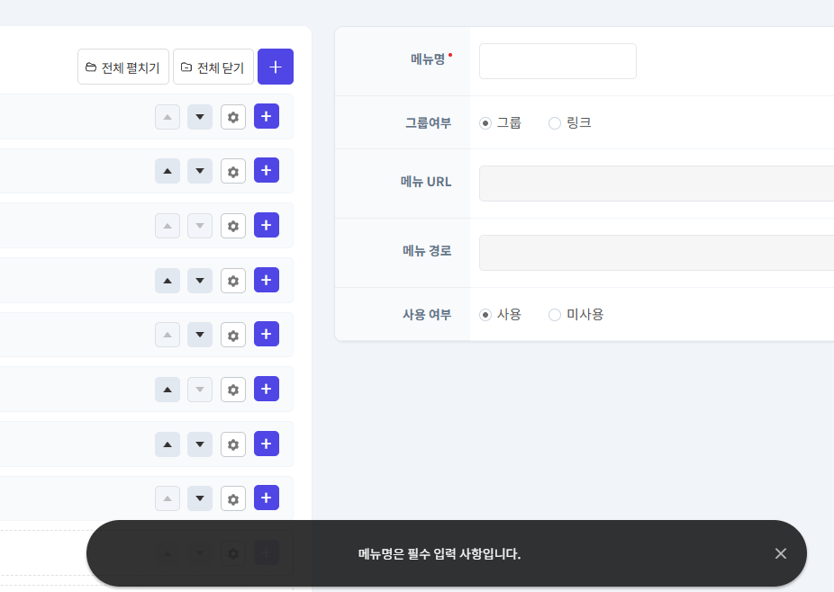
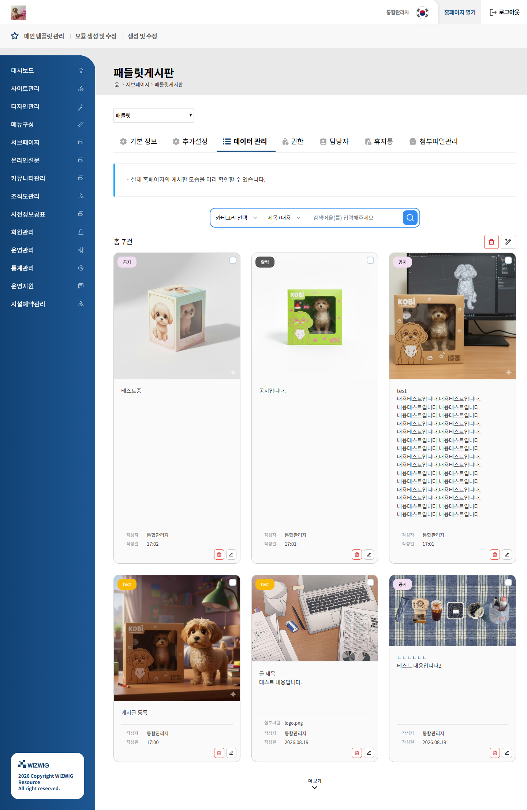
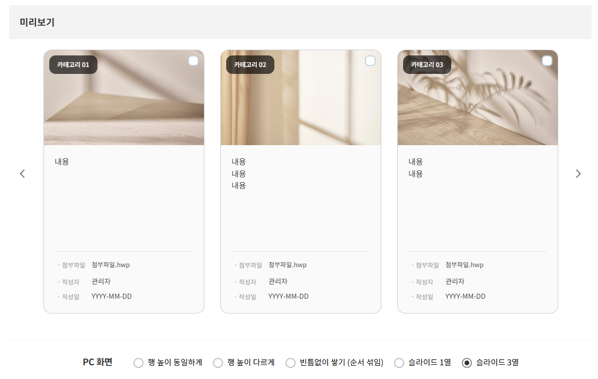
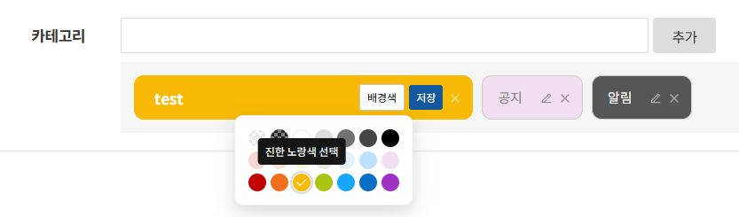
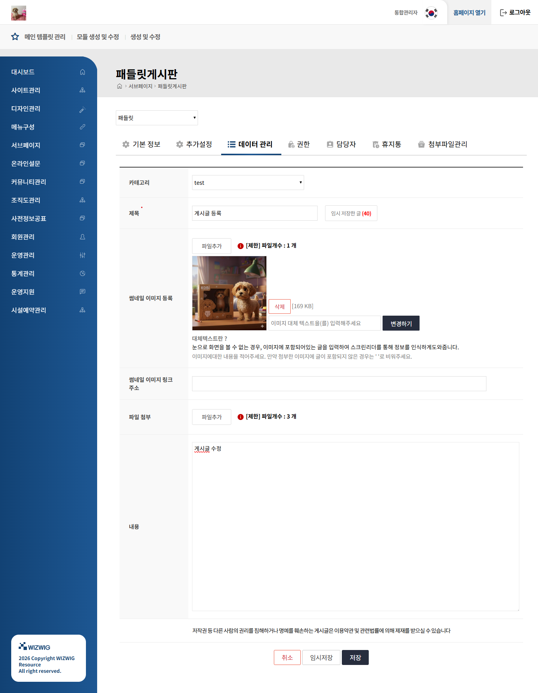

UI PUBLISHER · FRONTEND DEVELOPER
화면을 정확하게,
경험은 자연스럽게.
약 4년의 웹 퍼블리싱 실무를 바탕으로
데이터와 사용자 행동이 연결되는 화면을 만듭니다.
WORK↘
SEOUL · KRPORTFOLIO 2026
01 ABOUT
디자인을 코드로 옮기는 일에서 시작해,
서비스의 흐름을 구현하는 개발자로.
교육·공공·커머스 서비스의 웹·모바일 화면을 구축하고 운영했습니다. 퍼블리셔 재직 기간에는 HTML과 CSS를 중심으로 레이아웃과 UI 완성도를 책임졌습니다.
2026년부터 JavaScript, Thymeleaf, Java, Spring Boot 환경에서 관리자 기능과 데이터 조건별 UI를 구현하며 프론트엔드 개발 영역으로 확장하고 있습니다.
02 SELECTED WORK
PROJECT 01 · COMMERCE ADMIN
WIZ SHOP
MENU SYSTEM
계층형 관리자 메뉴를 구성하고 등록·수정, 입력 검증, 상태에 따른 UI 변화를 구현했습니다.

01 GROUP STATE — 하위 메뉴를 갖는 그룹 상태

02 LINK STATE — URL을 연결하는 링크 상태
CHALLENGE
복잡한 메뉴 상태를
명확한 규칙으로
그룹·링크 유형과 사용 여부에 따라 입력 영역과 메뉴 스타일이 자연스럽게 달라지도록 화면 상태를 설계했습니다.

필수값 검증과 즉각적인 사용자 피드백
- JavaScript
- Thymeleaf
- HTML
- CSS
- Spring Boot
- MyBatis
PROJECT 02 · BOARD BUILDER
PADLET
BOARD
설정형 카드 게시판 개발 및 JSP·Thymeleaf 환경 확장.
화면 옵션과 데이터를 연결하고, 검색 상태·게시글 조회·슬라이드 전환에서 발생한 문제를 해결했습니다.
- 기간
- 2026.05–06 개발 · 07–08 환경 확장
- 담당
- 설정·게시물 관리 기능, JavaScript UI 처리, Java·SQL 연동
- 협업
- 화면 스타일 보완 및 반응형 기준 조율은 퍼블팀과 협업

데이터 관리 · 검색 · 게시물 카드 목록

PC·모바일 배치, 테두리·불릿 옵션을 미리보기와 저장값에 연결

카테고리 배경색 설정과 게시물 분류 기능 확장

게시물 등록·수정과 썸네일 삭제 상태의 DB 반영 처리
IMPLEMENTATION & DEBUGGING
화면 뒤의 문제를
끝까지 따라갔습니다.
UI 갱신 범위부터 등록 데이터와 조회 조건까지, 증상에 맞춰 원인을 좁히고 수정했습니다.
01 / JavaScript · DOM
검색해도 선택한 카테고리가 유지되도록
- 문제
- 카테고리로 검색한 뒤 선택값이 유지되지 않았습니다.
- 원인
- 검색 응답을 반영하면서 목록뿐 아니라 검색창까지 다시 생성하고 있었습니다.
- 해결
- 응답 HTML에서 목록 영역만 찾아 교체했습니다. 검색창은 유지하고, 갱신된 목록에는 배치 옵션과 더 보기 처리를 다시 적용했습니다.
핵심 판단 — 사용자 입력 상태와 조회 결과의 갱신 범위를 분리했습니다.
02 / Java · SQL
저장됐지만 목록에 보이지 않던 게시글
- 문제
- 게시글 등록은 됐지만 데이터 관리 목록에는 나타나지 않았습니다.
- 원인
- 등록 시 작성자 고유번호가 누락됐고, 목록 조회에서 작성자 정보와 연결하는 JOIN 조건을 충족하지 못했습니다.
- 해결
- Controller의 등록값과 INSERT·목록 조회 SQL을 대조했습니다. 저장 전에 로그인 사용자의 고유번호를 작성자 정보에 설정하도록 수정했습니다.
핵심 판단 — 저장 성공 여부뿐 아니라, 조회에 필요한 데이터가 함께 저장되는지 확인했습니다.
03 / jQuery · Slick
배치를 바꿀 때 깨지던 슬라이드
- 문제
- 슬라이드 전환 과정에서 카드 배치가 깨졌습니다.
- 원인
- 기존 초기화 확인 조건이 실제 슬라이드 상태를 읽지 못해 해제 처리가 실행되지 않았습니다.
- 해결
- Slick의 초기화 클래스 유무로 상태를 확인하도록 변경했습니다. 기존 슬라이드를 해제한 뒤 선택한 열 수로 다시 초기화하도록 처리했습니다.
핵심 판단 — CSS만 조정하기 전에 플러그인의 초기화·해제 흐름을 확인했습니다.
ONE MODULE, MULTIPLE ENVIRONMENTS
개발한 기능을 다른 실행 환경으로
게시판 모듈 개발
설정 미리보기·저장, 게시물 관리와 검색을 구현하고 카테고리 배경색 기능을 추가했습니다.
Thymeleaf 환경 적용
Spring Boot·Thymeleaf 환경에 화면과 기능을 적용하며 임시저장 팝업과 썸네일 처리 등을 보완했습니다.
전자정부 5.0 / JSP 적용
Java·JSP·SQL을 적용하고 CUBRID·MariaDB·Oracle·PostgreSQL별 SQL을 반영했습니다.
업무 기록과 구현 코드를 바탕으로 정리한 개발 사례입니다. 회사 원본 소스 및 내부 시스템 주소는 공개하지 않습니다.
- Java
- Spring MVC / Boot
- JSP / Thymeleaf
- JavaScript
- jQuery · Slick
- MyBatis · SQL
- HTML · CSS
03 EXPERIENCE
Frontend · Application Development
관리자 기능, JavaScript 상태 처리, Thymeleaf 기반 화면, Java·SQL 데이터 흐름
Web Publisher · UI Development
교육·공공 서비스의 웹·모바일 퍼블리싱, 반응형 레이아웃, UI 구축 및 유지보수
ADDITIONAL EXPERIENCE
- 통통통 서비스 개편교육 서비스 · 장기 운영
- 훈장마을 서비스 개편웹·앱 UI 퍼블리싱
- 경기도교육복지종합센터공공기관 홈페이지 구축
- 오산교육재단 진로진학정보교육기관 페이지 구축
- KOTRA 서울푸드행사 홈페이지 구축
04 CAPABILITIES
HTMLCSSJavaScriptResponsive UIThymeleafJavaSpring BootMyBatisSQLGiteXBuilder6